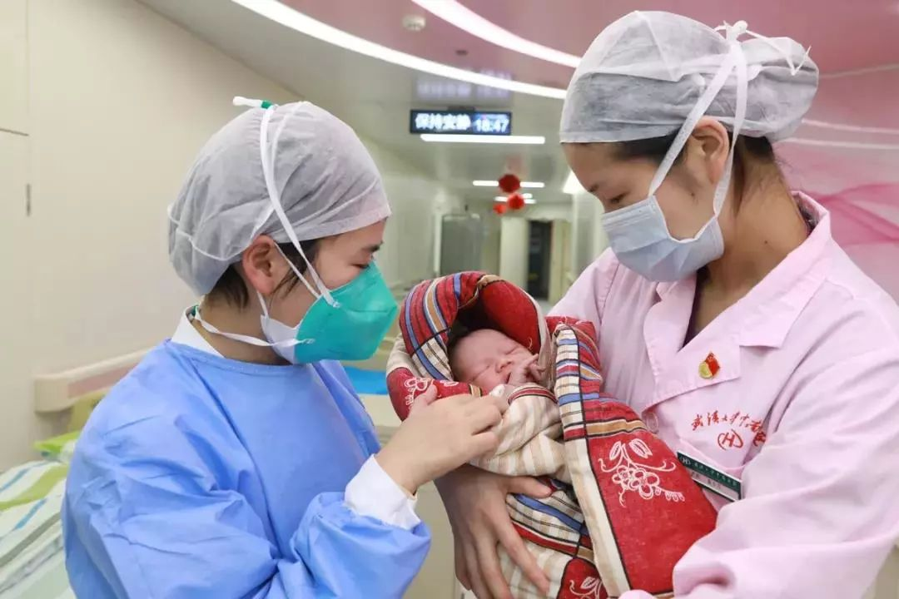
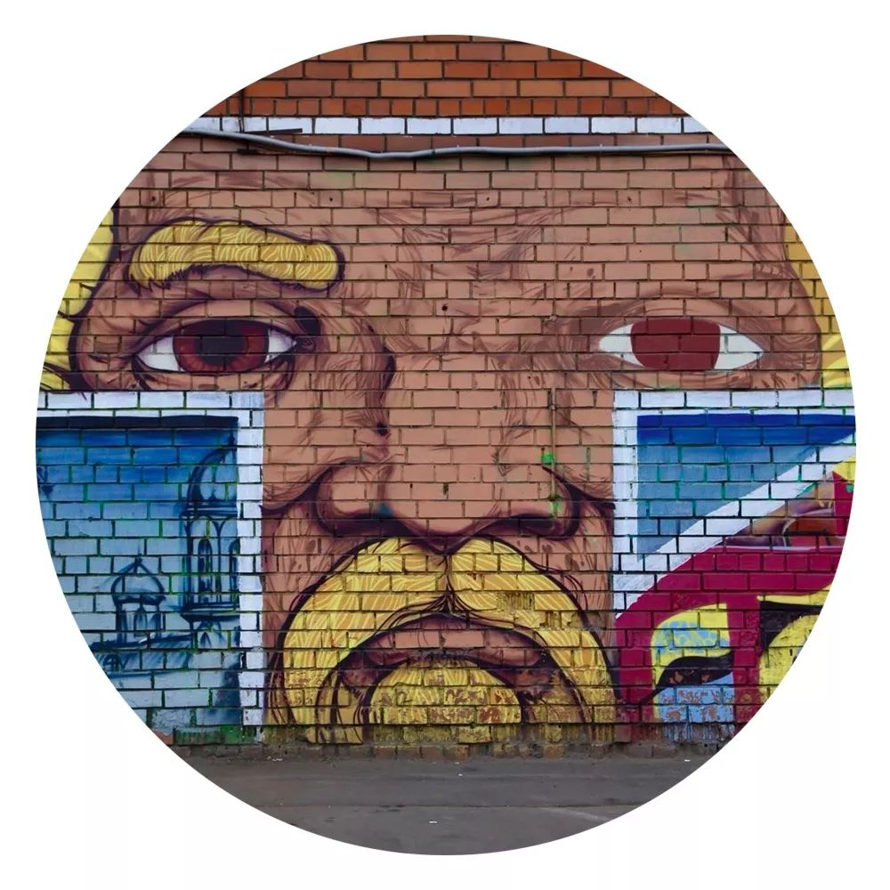

轻症患者家属自述：冠状病毒肺炎很可恨，但没那么可怕
原文链接 备份链接 作者 | 周纯 出品 | 棱镜·腾讯小满工作室 新型冠状病毒肺炎疫情下，人们担心自己会被周围未知的病毒携带者感染，更担心万一感染之后，能否治愈？是否会像当年“非典“一样留下后遗症？ 《棱镜》1月25日对话了一名新型冠状 …

摘要：正月初一，武汉产妇刘露露被确诊新冠肺炎，5天前她刚刚生下一名男婴。她是武汉大学中南医院产科第一例确诊的新型冠状病毒肺炎患者，到今天仍在经历生命的考验。
文 | 陈怡含
编辑 | 林鹏

除夕夜，一位新型冠状病毒肺炎高度疑似患者在武汉大学中南医院成功生子。（图片来源：梨视频，图文无关）
对刘露露来说，眼下正在经历的是一个万万想不到的“月子”。
作为一个准妈妈，她曾无数次想过应该怎样坐月子。那是女人“元气大伤的时候”，需要很多营养。但是现在，生下儿子后，她被确诊为新型冠状病毒肺炎，只能待在隔离病房里，吃医院送来的盒饭。
因为家人被隔离在家，电动吸奶器无法送去医院，涨奶后，她的身体更加不适。更糟糕的是，其余亲朋无一在武汉，她甚至找不到一个可以帮她把刚出生的孩子从医院接走的人。
2020年的除夕夜，武汉大学中南医院产科的手术室里，一位新型冠状病毒肺炎高度疑似患者成功生下一名婴儿。
医护人员身穿白色防护服进行手术的画面被媒体传到网上，因纪录片《生门》被大众熟知的产科主任李家福戴着口罩说，自从1月20日武汉市卫健委发布肺炎疫情定点医院信息后，截至当时，他们陆续在七位发热的孕产妇中排查出了两位高度疑似患者。
大年初一的上午，作为两名高度疑似患者之一，刘露露的核酸检测结果为阳性。
1月20日，怀孕37周的刘露露因为肝功能异常、心肌酶高转入中南医院，剖腹产生下一名男婴。术后第三天凌晨，本该在几个小时后出院的她出现发热症状，医生怀疑是新型冠状病毒肺炎，将她隔离观察。
刘露露入院的时候，没有人把她和新型冠状病毒肺炎联系在一起。
“现在大家都知道了，这个肺炎早期不一定发烧。当时大家的认识并没有现在充分，她没有发烧、乏力、咳嗽、腹泻，早期最主要的四大临床表现都没有。”随着对疫情的认知不断提高，结合与其他医生的业务交流，李家福认为，刘露露入院时检验指标的异常应该与新型冠状病毒有关。
刘露露成了中南医院产科第一例确诊的新型冠状病毒肺炎患者。与此同时，为她取样的助理护士长开始居家进行医学观察。刘露露对此并不知情，她不仅要打起精神和病毒对抗，还不得不面对另外一些棘手的问题。
以下是刘露露的口述：
大年初一确诊
我的预产期在2月，正月十五的样子。去年12月，做常规产检的时候，谷丙转氨酶的值有一点点高，医生说不需要做特别处理。到1月19号，差不多快足月了，医生让我复查一下这个指标，结果就很吓人了——正常的值是0-40，但是我的值飙到了一千多，快两千，肝功能极度异常、心肌酶高，医生当即就让我住院了。
我并不是在中南医院建的档，而是在普仁医院，从我们家到那里走路只要15分钟。我一直规规矩矩地产检，自己从没有感觉到明显的不舒服，胎心也都很正常。后来产检医院的主任找我谈话，建议我转上级医院，先把孩子生下来，再做治疗。我们就转去中南医院的产科。
1月20号下午，我剖腹产生下一个男孩。手术持续了一个多小时，还算顺利。术后，我住进了三人病房。我的妈妈和婆婆从外地急急忙忙赶过来，准备照顾我和孩子。
起初我没有出现什么症状，正常地进行产后恢复。孩子一出生就被带到了新生儿科，我没见到。老公在监护室外拍了孩子的照片，拿给我看，我很开心，叫他把照片发到我的手机上，反复地看。
转折点在23号凌晨。因为开窗通风，我穿着衣服就钻进被窝了，睡了一会儿觉得很热，又把衣服脱掉，这个过程中可能有点着凉了，后来感觉鼻子也有点堵。老公出去帮我倒杯热水，路过护士站的时候，他借了个温度计，一测，38（摄氏）度多。
隔20分钟再测，还是那么高。
当天下午，我和老公被叫到病房外面，医生说我现在是疑似新型冠状病毒肺炎患者，为了防止传染，要转去单人病房，重点观察。
下午4点钟，我查了CT，结果肺部已经有实变了。医生说，要取样做核酸检测。
取样的那天是除夕，武汉“封城”的第二天。老公透过病房的窗户向外看，街道上已经没什么人了。我们俩在病房里过了年。年夜饭是医院食堂买来的，他吃了一份盒饭，我不敢吃太油腻的东西，吃了稀饭和鸡蛋。
那天晚上我一直躺在床上打吊针，春晚也看不了，也没给家人拜年。
大年初一的上午，检测结果出来了，是阳性。
我们很快就开始担心孩子。之前还没有那么担心，因为看到网上说这个病毒婴儿和儿童是不易感人群。但拿到确诊结果之后，我们拜托产科的医生转告新生儿科，希望能给孩子也做个核酸检测。

1月26日，武汉大学中南医院检验科在进行新兴冠状病毒核酸检测。（图片来源：武汉大学中南医院微博）
来之不易的床位
去年12月底，新型冠状病毒肺炎的新闻报出来的时候，老公就打电话跟我说了，他在学校工作，他们学校排查得很严，但是当时因为报道的情况并不严重，没想到会扩散得这么大。我一个孕妇，既没有乱吃东西，也不怎么跟外面的人接触，之前每天吃过晚饭我都会出去走动，总觉得这个东西好像离我比较远。
19号产检的时候，人们也没有大范围地戴口罩。20号住进中南医院产科的时候，有些医护人员也没有戴口罩，还穿着普通的白大褂。
直到22号，情况有了明显的变化。医院给我们每个病房都发了口罩，而且仅允许一名家属陪同。到了23号，管理得更严格了，为了控制人员流动，医院把电梯间通往病房的门都关了。
我实在想不出自己是在哪里染上病毒的，现在也很难查证了。
确诊之后，病床非常紧张，李家福主任托人协调了好久，终于在中南医院本院的感染科给我找了一个床位。
产科在3号楼，感染科在6号楼。初一那天外面下着雨，很冷，我穿着隔离服，被裹得严严实实，护士长拉着我，老公在后面拿着东西，就这么往感染科走。我很感激，那天，护士长自己都在咳嗽。
很多人都在超负荷地工作。在产科隔离时，一个护士给我打针，打了三次都没有打进去，我感觉她都找不到我的血管了，也不知道是护目镜影响了她的视线，还是她太劳累了。
病床有限，条件也有限。同屋住了两位男士，而且没有帘子。产科的病房是有空调的，这里没有。但是，这样一个床位已经是来之不易了。
这些天我一直在打点滴，起初是剖腹产后收宫的点滴，现在是消炎的。目前新型冠状病毒还没有特效药，只能对症用药。我两只手已经快没地方扎针了，手臂都有点僵直、水肿。
前几天，老公一直陪在我身边。转到感染科后，他不能再陪护了。从生产到现在，我都没有洗过澡，老公在的时候，还能帮我擦擦身体，现在实在不方便，既要小心手上的针头，也要小心剖腹产的伤口。我还跟老公说要把头发给剪了，因为头发已经（打）结了。他离开之后，我晚上不敢睡熟，怕呼吸不畅，怕半夜发烧，怕自己睡过去。
要保存体力活着
一切都太突然、太紧急了，大家都没有准备好，不管是个人、医院还是政府。
医院的物资非常紧缺，我老公听护士们说，感染科只能保证人均一个口罩，第二天还不知道是什么情况，而整个产科，当时只有10套防护服。这些防护用品，肯定陆陆续续会补上来，但是有些病患有特殊的需要，就不一定顾得到。
我就是一个例子。我已经涨奶好几天了，孩子又不在旁边，急需一个电动吸奶器，前几天我用手动吸奶器，不好用，（乳房）都出血了。病房的老人，连上厕所的纸都快用完了，手机充电器也没有，送不进来。
还有牛奶，我现在坐月子，免疫能力很低，我老公说，按中医的话，现在就是元气大伤的时候， 而这个病毒就是考验人的免疫能力，我在这里抵抗病毒，需要营养。
其实家里准备了很多坐月子需要的东西，按照产科现在的惯例，住院三天就要出院，原本带到医院的物资也是够的。但是我们不知道会“封城”，不知道会停掉公共交通。这些措施都是临时采取的，我们哪知道不能够再补充东西进来呢？
大年初一晚上，我老公从医院回家，在路上拦的士，拦了五六辆都没有停，也许是因为他在医院附近，司机会害怕。他想找扫码支付的电瓶车，一直没有找到。后来走了大概两公里，终于拦到一辆的士，给他带回了家。
有的外卖也不送医院了。初一中午我点外卖，商家直接把订单取消了。我没有打电话问，这不很明显嘛，人家不做这个生意。
初二早上，社区工作人员到了我家，测了我老公、妈妈和婆婆的体温，发了口罩和消毒药，让他们把家里清洗一遍，并告诉他们，需要居家隔离14天。
那我需要的物资怎么办？我的孩子怎么办？他们可以派其他人送物资、接孩子吗？没有这个措施。有时候，不是疾病把我们逼得没办法了。
直到那天晚上，我还在四处找人帮忙买电动吸奶器，老公告诉我，产科那栋楼的超市应该就有卖，我找医生，医生说不能脱岗，我说给她转账，请她下班之后买了带来，反复沟通了几次。初三早上，我拿到了吸奶器，焦虑一下子减轻了，心里一块大石头落了地。医生说，是感染科的主任帮忙买的，我很感激。
我还很担心孩子的安全。花了这么大的力气生下这个孩子，还一眼都没有看到呢！这几天他和我一直是分开的，不过这样我也放心一点，免得他被我传染。
初二那天，新生儿科的医生说，孩子的身体状况不错，要求他出院。可是没有人去接：家里三个人都被限制出行，其他家人都不在武汉，也不敢让他们现在来武汉。我老公问了很多朋友，都在“封城”之前返乡过年了。
我们只好和新生儿科沟通，他们原本不同意，但后来考虑到我们的特殊情况，说孩子可以继续留在那里，但是不排除有感染的风险。我老公发了一段声明过去，表示后续孩子出现什么变化，我们自行承担后果。
初三，产科的主治医生过来看了我的刀口，还给我通乳，吸奶器也让我的身体得到了舒缓。另一个好消息是，我的宝宝在初二做了核酸检测，结果显示他没有被感染。我一下子有信心多了。

在武汉大学中南医院产科，一个健康的新生儿出生了。（图片来源：武汉大学中南医院微信公众号，图文无关）
现在，我最需要的是休息，我同房间的两个病人一个高烧，另一个老人病得很重，他们也需要休息。这两天我也只是跟家人简单报了个平安，我们都要保存体力活着。
我活下去的信念就是要跟家人团圆、要照顾我的孩子。之前我们已经给孩子取好了名字，但是现在要重想了，因为当时是按照鼠宝宝来取的。现在很多武汉的孕妇都想给孩子取个保佑的意思，我们也想，碰到这种事情，肯定希望有保佑的意思，希望他健健康康成长。对了，这两天武汉出太阳了，希望我们的身体跟这暖阳一样明媚。
（文中刘露露为化名，部分内容由其老公转述）
后台回复”读者群”, 加入更多讨论
作者简介


*陈怡含*
我情愿相信世界不愚昧。

原文链接 备份链接 作者 | 周纯 出品 | 棱镜·腾讯小满工作室 新型冠状病毒肺炎疫情下，人们担心自己会被周围未知的病毒携带者感染，更担心万一感染之后，能否治愈？是否会像当年“非典“一样留下后遗症？ 《棱镜》1月25日对话了一名新型冠状 …
原文链接 备份链接 截至1月30日10点03分，中国新型冠状病毒感染肺炎确诊病例突破7000例，达到7736例，疑似病例12167例，死亡170例，治愈出院124例。 据报道，在武汉封城之前，有500万人离开了这座城市。位于武汉西南部、曾 …
原文链接 备份链接 “我在家族群里说，科室工作群里每天都有很多接诊信息，护士长已经连续工作48小时，还有护士生病了。选择当医生、当护士肯定是有风险，但我会做好防护。我返回岗位继续工作不是为了当英雄，但是不能做逃兵。” 全文2771字，阅读 …
原文链接 备份链接 作为风暴眼中的一位普通市民，我在自己意识里构建出的安全感，在生活的随机性前，就如潮水中的沙堡，一下就被分崩离析了。 配图 | B站UP主林晨同学自制视频 征 稿 从2019年12月8日首例武汉新型冠状病毒肺炎患者出现， …
原文链接 备份链接 17 年前的那场公共卫生危机，未能及时公开疫情成为事后被诟病最多的问题之一，也成为中国疾病防控系统以及政府信息公开等许多方面的重要转折点。 而多年后，越来越多的互联网官方渠道成为了重大事件的定海神针，「官宣」被普遍接 …